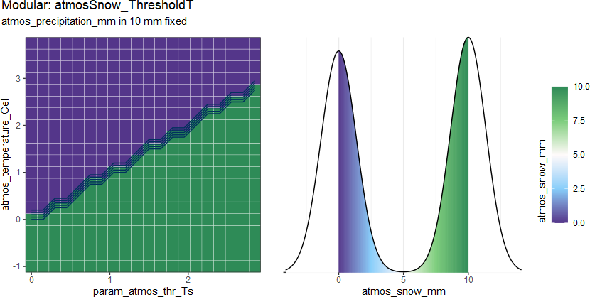
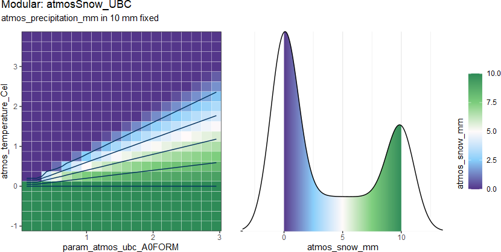

caculate snowfall
atmosSnow.RdUnder the concept of the conceptual HM, the amount of snowfall is always calculated by the temperature \(T\) and the precipitation \(P\) availability. The proportion of snowfall is always determined by the air temperature.
So we can give the function from:
\[P_s = f_{atmosSnow}(D_{atms})\]
to:
\[P_s = f_{atmosSnow}(P, T) = k^*P\] \[0 \leq k^* \leq 1\] where
\(P\) is
atmos_precpitation_mm\(T\) is
atmos_teperature_Cel\(k^*\) is estimated portion
Then the different atmosSnow methods will estimate the portion \(k^*\).
The output density distribution from 2 methods:

atmosSnow_ThresholdT(
atmos_precipitation_mm,
atmos_temperature_Cel,
param_atmos_thr_Ts
)
atmosSnow_UBC(
atmos_precipitation_mm,
atmos_temperature_Cel,
param_atmos_ubc_A0FORM
)Arguments
- atmos_precipitation_mm
(mm/m2/TS) precipitaion volum
- atmos_temperature_Cel
(Cel) the average air temperature in the time phase
- param_atmos_thr_Ts
<-1, 3> (Cel) threshold air temperature that snow, parameter for
atmosSnow_ThresholdT()- param_atmos_ubc_A0FORM
<0.01, 3> (Cel) threshold air temperature that snow, it can not equal or small than 0, parameter for
atmosSnow_UBC()
Value
atmos_snow_mm (mm/m2/TS) snowfall volume
_ThresholdT:

Only a temperature is as the threshold defined, so estimate the portion \(k^*\) as: \[k^{*}=1, \quad T \leq T_s\] where
\(T_s\) is
param_atmos_thr_Ts
_UBC (Quick and Pipes 1977) :

estimate the portion \(k^*\) as: \[k^* = 1- \frac{T}{T_0}\] \[k^* \geq 0\] where
\(T_0\) is
param_atmos_ubc_A0FORM
References
Quick MC, Pipes A (1977). “U.B.C. WATERSHED MODEL / Le Mod攼㸸le Du Bassin Versant U.C.B.” Hydrological Sciences Bulletin, 22(1), 153--161. ISSN 0303-6936, doi: 10.1080/02626667709491701 .